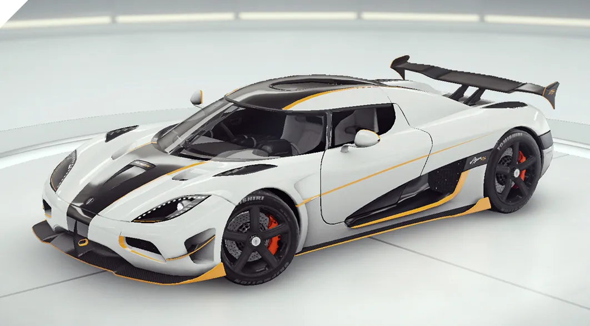
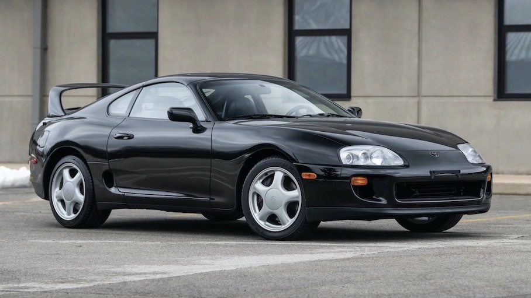

CoolBoss
Основное назначение автомобиля заключается в совершении транспортной работы. Автомобильный транспорт в
промышленно развитых странах занимает ведущее место по сравнению c другими видами транспорта по объёму перевозок
пассажиров. Современный автомобиль состоит из 15—20 тысяч деталей, из которых 150—300 являются наиболее
важными и требующими наибольших затрат в эксплуатации и обслуживании. Понятие включает: легковой автомобиль,
грузовой автомобиль, автобус, троллейбус, бронетранспортёр, но не включает сельскохозяйственный трактор и
мотоцикл.
McLaren

- Двигатель: V8 Twin Turbo.
- Объем: 4.0 л (244 дюйм³ / 3994 см³)
- Мощность: 720 л.с.
- Крутящий момент: 770 Н·м (568 lb-ft) @ 5500 об/мин
- Снаряжённая масса: 1468-1514 кг (3236-3338 фунт)
- Трансмиссия: 7-ступенчатая автоматическая с двойным сцеплением
- Кузов: Кабриолет
Koenigsegg

- Мощность: 1115 л.с. при 6900 об/мин, отсечка на 7250 об/мин
- Крутящий момент: более 1000 Нм от 2700 до 6170
- Максимум крутящего момента: 1200 Нм при 4100 об/мин
- Ускорение: 0-100 км/час за 2,9 секунды, 0-200 км/час за 7,5 секунды, 0-200-0 км/час за 12,7 секунды
- Тормозная дистанция: 30,5 м (100-0 км/час)
- Боковое ускорение: 1,6g
- Расход топлива: на трассе 12,5 л/100 км, смешанный цикл 14,7 л/100 км
- Соотношение вес/мощность: 1,19 кг/л.с.
- Распределение веса: 45% перед, 55% зад
Toyota

- Максимальная мощность 280 л.с. (208.8 кВт) при 5600 об/мин
- Максимальный крутящий момент 451 Нм (46 кГм) при 3600 об/мин
- Тип кузова 2+2 местное купе
- Длина 4520 мм
- Снаряженная масса 1510 кг
- Объем двигателя 3 литра, 2997 см3
- Цилиндров 6, расположение однорядное
- Количество дверей 2